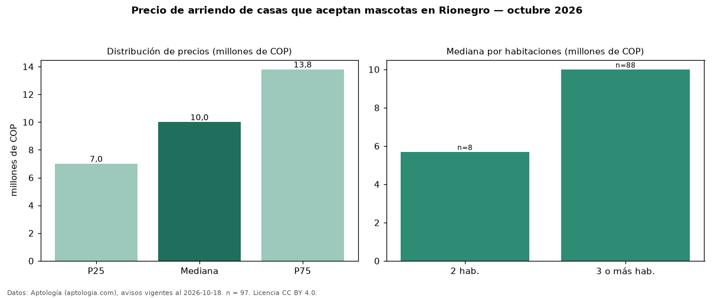

Precio de arriendo de casas que aceptan mascotas en Rionegro — octubre 2026
COP 10 millones al mes es el canon mediano de casas que aceptan mascotas en arriendo en Rionegro (n = 97 avisos). Frente a la mediana de todas las casas en arriendo de Rionegro (COP 10,50 millones, n = 1.437), queda 5 % por debajo; este segmento reúne el 7 % de esos avisos. Por metro cuadrado, la mediana es COP 33.333/m² al mes (n = 83), 9 % por debajo del conjunto de referencia (COP 36.784/m²). El área mediana anunciada es 305 m². El segmento con más oferta es el de 3 o más habitaciones (88 avisos, mediana COP 10 millones); pasar de 2 habitaciones a 3 o más habitaciones cambia la mediana +75 %. La administración mediana declarada es COP 644.000 al mes (n = 25), aparte del canon. La mitad central de los avisos va de COP 7,00 millones a COP 13,80 millones (razón 2,0), una dispersión moderada. El estrato más frecuente es 5 (45 % de los avisos con estrato). Datos: Aptología (aptologia.com), CC BY 4.0 — https://www.aptologia.com/arriendo/rionegro. Archivos: PDF, CSV con las cifras y gráfica PNG.

| Avisos únicos | 97 |
|---|---|
| Percentil 25 | COP 7.000.000 |
| Mediana | COP 10.000.000 |
| Percentil 75 | COP 13.800.000 |
| Mediana por m² | COP 33.333 |
Fuente: avisos vigentes de portales inmobiliarios recopilados por Aptología, deduplicados (mínimo 30 avisos únicos por celda). Precios pedidos, no cerrados. Fecha: 2026-10-18.